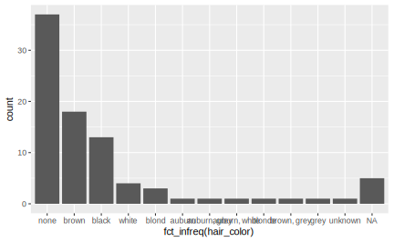
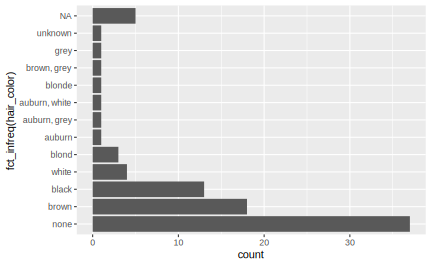
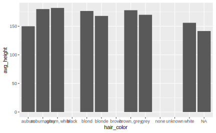
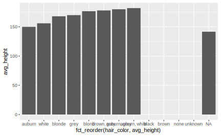
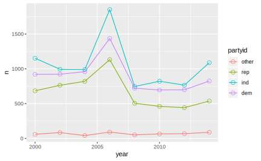

5 forcats
5.1 简介
因子(factor)在 R 中用于处理分类变量。从历史上看，因子远比字符串容易处理。因此，R基础包的很多函数都自动将字符串转换为因子。这意味着因子经常出现在并不真正适合他们的地方。好在我们不用担心tidyverse中出现这种问题，可以将注意力集中于真正需要因子类型的地方。
Roger Peng的文章"stringsAsFactors: An unauthorized bigraphy和Thomas Lumley的文章stringsAsFactors = sigh介绍了有关因子和字符串的一些历史背景。
2006 年, stringsAsFactors 这一设置的前身 charToFactor 被引入了 data.frame() 函数中，后来被纳入到 read.table() 里。默认情况下，stringsAsFactors被设置为True，R便会自动把字符串转换为因子型变量。在当时，这种设置是不难理解的。早期R的用户几乎都是统计科班出身的研究者，他们所用数据集里的字符串几乎都代表了一个定性变量，例如年龄(male/female),国家(US/other)，地区(East/West)。进一步地，由于统计学家们的工作重点几乎都集中在构建各种统计模型上，而像lm()和glm()的函数只有当一个变量是 factor 类型的时候才开始对其编码，在统计模型中构建虚拟变量。
另一个原因更隐秘一些。在内部的存储机制中，因子变量经过一些编码后用数值存储，使得因子比字符串在占用内存空间上更加划算。2007 年后，R 引入了一种“CHARSXP”的方法，使得字符串也被映射为数值存储，stringsAsFactors = T在这点上的优势便不复存在了。
如今，R 的用户群体大大地多样化了，许多人开始抱怨默认设置stringsAsFactors = T，因为他们数据集中的字符串未必要用来建模，而可能只是一种标签。例如，在基因组学中，基因位点的名字不是某个模型中的变量，而现在把它们转换为因子也不会再有存储上的优势，反而会使得一些分析方法失效（比如使用正则表达式）。
我们将使用forcats包来处理因子，这个包提供了能够处理分类变量（其实就是因子的另一种说法）的工具，其中还包括了处理因子的大量辅助函数。因为 forcats 不是tidyverse的核心 R 包，所以需要手动加载。
所有 forcats 中用于因子处理的核心函数均以 fct_ 前缀开头，且第一个参数均为要处理的因子向量，这意味着forcats包中的函数在使用管道操作时，传入的必须是你要操作的向量。关于 fct_ 函数族最有用的一点是，它可以接受传入的向量是字符串变量（而不仅仅是因子类型），且不会在输出结果中改变变量的类型。这意味着字符串可以一方面享受 fct_ 函数带来的操作便利，一方面保有字符串的特性。
5.1.1 因子基础
假设我们想要创建一个记录月份的变量：
使用字符串来记录月份有两个问题：
- 理论上，月份只有12个取值。但使用字符串时，我们没有办法告诉 R 什么样的值才是合法的，即使输入错误，代码也不会有什么反应。
- 对月份的排序没有意义，因为字符串总是按照字母顺序排列的
我们可以使用因子来解决以上两个问题。想要创建一个因子，最好先创建指定因子水平顺序的一个向量：
month_levels <- c("Jan", "Feb", "Mar", "Apr", "May", "Jun",
"Jul", "Aug", "Sep", "Oct", "Nov", "Dec")现在可以开始创建因子了：
y1 <- factor(x1, levels = month_levels)
y1
#> [1] Dec Apr Jan Mar
#> Levels: Jan Feb Mar Apr May Jun Jul Aug Sep Oct Nov Dec使用因子类型后，不在有效水平向量内的的所有值都会自动转换 为NA：
y2 <- factor(x2, levels = month_levels)
y2
#> [1] Dec Apr <NA> Mar
#> Levels: Jan Feb Mar Apr May Jun Jul Aug Sep Oct Nov Dec如果要显示错误信息，可以用readr::parse_factor()函数代替 R 基础包中的factor(),当向量x的中的某些元素不在有效水平列表时返回错误信息：
如果省略了定义水平向量这个步骤，那么R会按照字母顺序作为水平由低到高的顺序：
有时候我们会想让因子的水平顺序与创建时输入的顺序保持一致。在创建因子时，将levels设定为unique(x)，就可以达到这个目的：
x1
#> [1] "Dec" "Apr" "Jan" "Mar"
f1 <- factor(x1, levels = unique(x1))
f1
#> [1] Dec Apr Jan Mar
#> Levels: Dec Apr Jan Mar如果想要直接访问因子的有效水平向量或者个数，可以使用levels()和nlevels()函数：
5.2 排序
5.2.1 按照水平的频次排序
fct_infreq() 函数根据在数据集中出现的频次对因子的不同水平进行排序。
starwars数据集是对剧中角色信息的一些整理，假设我们想知道全部角色中最常见的发色是什么，可能会做出类似如下的条形图：
starwars
#> # A tibble: 87 x 13
#> name height mass hair_color skin_color eye_color birth_year gender homeworld
#> <chr> <int> <dbl> <chr> <chr> <chr> <dbl> <chr> <chr>
#> 1 Luke… 172 77 blond fair blue 19 male Tatooine
#> 2 C-3PO 167 75 <NA> gold yellow 112 <NA> Tatooine
#> 3 R2-D2 96 32 <NA> white, bl… red 33 <NA> Naboo
#> 4 Dart… 202 136 none white yellow 41.9 male Tatooine
#> 5 Leia… 150 49 brown light brown 19 female Alderaan
#> 6 Owen… 178 120 brown, gr… light blue 52 male Tatooine
#> # … with 81 more rows, and 4 more variables: species <chr>, films <list>,
#> # vehicles <list>, starships <list>
ggplot(starwars, aes(hair_color)) +
geom_bar()+
coord_flip()
对于这种条形图的常见调整是让因子的水平按照其在数据中出现的频次排列，fct_infreq()函数可以很轻松地完成这一任务(缺失值总会被排在最后)：

如果返回starwars数据集，你会发现hair_color其实是字符串变量，但是完全适用于fct_infreq()的操作。
5.2.2 按照其他变量排序
fct_reorder() 其实就是 reorder() 在 forcats 中的实现，它根据因子在其他变量上的统计量（中位数、平均数、···）的值对个水平进行排序，当绘制非频次条形图(stat = "identity")时它便很有用。
我们可以通过 fun 设定统计函数（默认为 median()），desc = T 设定降序排列（默认升序）：
## 对发色分组，计算身高的中位数
(avg_height <- starwars %>% group_by(hair_color) %>%
summarize(avg_height = mean(height)))
#> # A tibble: 13 x 2
#> hair_color avg_height
#> <chr> <dbl>
#> 1 auburn 150
#> 2 auburn, grey 180
#> 3 auburn, white 182
#> 4 black NA
#> 5 blond 177.
#> 6 blonde 168
#> # … with 7 more rows
ggplot(avg_height,aes(x=hair_color,y=avg_height))+
geom_bar(aes(hair_color, avg_height), stat="identity")
ggplot(avg_height,aes(fct_reorder(hair_color, avg_height), avg_height))+
geom_bar(stat="identity")
5.2.3 人工指定顺序
fct_infreq()和fct_reorder()排序的依据是明确的，但我们有时也需要人工指定、修改排序结果。fct_relevel()接受一个向量调整因子水平的排序。
这个例子中使用forcats::gss_cat数据集，该数据集是综合社会调查（General Social Survey）的一份抽样。综合社会调查是美国芝加哥大学的独立研究组织 NORC 进行的一项长期美国社会调查。gss_cat数据挑选了一些变量：
gss_cat
#> # A tibble: 21,483 x 9
#> year marital age race rincome partyid relig denom tvhours
#> <int> <fct> <int> <fct> <fct> <fct> <fct> <fct> <int>
#> 1 2000 Never mar… 26 White $8000 to … Ind,near r… Protesta… Souther… 12
#> 2 2000 Divorced 48 White $8000 to … Not str re… Protesta… Baptist… NA
#> 3 2000 Widowed 67 White Not appli… Independent Protesta… No deno… 2
#> 4 2000 Never mar… 39 White Not appli… Ind,near r… Orthodox… Not app… 4
#> 5 2000 Divorced 25 White Not appli… Not str de… None Not app… 1
#> 6 2000 Married 25 White $20000 - … Strong dem… Protesta… Souther… NA
#> # … with 2.148e+04 more rows
levels(gss_cat$rincome)
#> [1] "No answer" "Don't know" "Refused" "$25000 or more"
#> [5] "$20000 - 24999" "$15000 - 19999" "$10000 - 14999" "$8000 to 9999"
#> [9] "$7000 to 7999" "$6000 to 6999" "$5000 to 5999" "$4000 to 4999"
#> [13] "$3000 to 3999" "$1000 to 2999" "Lt $1000" "Not applicable"在这个数据集中，因子rincome个水平的顺序排列是正确的。为了演示fct_relevel()的用法，先用fct_shuffle()打乱该因子的水平顺序：
reshuffled_income <- fct_shuffle(gss_cat$rincome)
## reordering the levels of rincome randomly with fct_shuffle():
levels(reshuffled_income)
#> [1] "$7000 to 7999" "Lt $1000" "$15000 - 19999" "$6000 to 6999"
#> [5] "$5000 to 5999" "$10000 - 14999" "$8000 to 9999" "$25000 or more"
#> [9] "$20000 - 24999" "$1000 to 2999" "Don't know" "$4000 to 4999"
#> [13] "No answer" "$3000 to 3999" "Not applicable" "Refused"在fct_relevel() 中，通过一个包含水平名称的向量调整排序。默认情况下，向量中的第一个水平被调整到第一个位置上，第二个水平被调整到第二个位置上，以此类推，你只需要指定那些需要调整的水平。可以通过after参数人工指定向量中各水平被调整到什么地方, after = -Inf 时第一个水平将被调整到排序的最后一位：
## move Lt $1000 and $1000 to 2999 to the front
fct_relevel(reshuffled_income, c("Lt $1000", "$1000 to 2999")) %>%
levels()
#> [1] "Lt $1000" "$1000 to 2999" "$7000 to 7999" "$15000 - 19999"
#> [5] "$6000 to 6999" "$5000 to 5999" "$10000 - 14999" "$8000 to 9999"
#> [9] "$25000 or more" "$20000 - 24999" "Don't know" "$4000 to 4999"
#> [13] "No answer" "$3000 to 3999" "Not applicable" "Refused"
## move Lt $1000 and $1000 to 2999 to the second and third place
fct_relevel(reshuffled_income, c("Lt $1000", "$1000 to 2999"), after = 1) %>%
levels()
#> [1] "$7000 to 7999" "Lt $1000" "$1000 to 2999" "$15000 - 19999"
#> [5] "$6000 to 6999" "$5000 to 5999" "$10000 - 14999" "$8000 to 9999"
#> [9] "$25000 or more" "$20000 - 24999" "Don't know" "$4000 to 4999"
#> [13] "No answer" "$3000 to 3999" "Not applicable" "Refused"5.3 改变水平个数
5.3.1 合并水平
forcats包提供了fct_count()函数可以很方便地查看因子各水平分布的情况，使用count()函数也可以达到同样的效果
fct_count(starwars$skin_color, sort = T)
#> # A tibble: 31 x 2
#> f n
#> <fct> <int>
#> 1 fair 17
#> 2 light 11
#> 3 dark 6
#> 4 green 6
#> 5 grey 6
#> 6 pale 5
#> # … with 25 more rows因子skin_color总共有31个水平，但绝大部分的频次都集中在前5、6个水平上，这时候我们可能想把余下的水平合并为一个水平，即创建一个“其他”水平。
fct_lump(f,n,prop)函数用于合并因子中那些低频次的水平，参数n和prop采用不同的表示方法，指定哪些变量保留下来（被合并）:
## 留下频次最高的前5个水平，剩下全部水平合并为1个
starwars %>%
mutate(skin_color = fct_lump(skin_color, n = 5)) %>%
count(skin_color, sort = TRUE)
#> # A tibble: 6 x 2
#> skin_color n
#> <fct> <int>
#> 1 Other 41
#> 2 fair 17
#> 3 light 11
#> 4 dark 6
#> 5 green 6
#> 6 grey 6
## 频次不足样本数10%的被合并
starwars %>%
mutate(skin_color = fct_lump(skin_color, prop = 0.1)) %>%
count(skin_color, sort = TRUE)
#> # A tibble: 3 x 2
#> skin_color n
#> <fct> <int>
#> 1 Other 59
#> 2 fair 17
#> 3 light 11默认情况下，合并生成的新水平被命名为“Other”，可以通过other_level参数为其设定一个名字：
## 将合并水平命名为“extra”
starwars %>%
mutate(skin_color = fct_lump(skin_color, prop=0.1,
other_level = "extra")) %>%
count(skin_color, sort = TRUE)
#> # A tibble: 3 x 2
#> skin_color n
#> <fct> <int>
#> 1 extra 59
#> 2 fair 17
#> 3 light 11如果给参数n或者prop指定一个复数，则频数最多的水平将被合并：
## 留下频次最低的5个水平
starwars %>%
mutate(skin_color = fct_lump(skin_color, n = -5)) %>%
count(skin_color, sort = T)
#> # A tibble: 17 x 2
#> skin_color n
#> <fct> <int>
#> 1 Other 71
#> 2 brown mottle 1
#> 3 brown, white 1
#> 4 fair, green, yellow 1
#> 5 gold 1
#> 6 green-tan, brown 1
#> # … with 11 more rows
## 占据频数超过90%的水平被合并为other
starwars %>%
mutate(skin_color = fct_lump(skin_color, prop = -0.1)) %>%
count(skin_color, sort = T)
#> # A tibble: 30 x 2
#> skin_color n
#> <fct> <int>
#> 1 Other 28
#> 2 dark 6
#> 3 green 6
#> 4 grey 6
#> 5 pale 5
#> 6 brown 4
#> # … with 24 more rows如果想人为地对水平进行合并，而不考虑频次，可以使用fct_other(f,keep,drop,other_level = "Other)函数，keep指定保留水平，drop指定合并水平：
x <- factor(rep(LETTERS[1:9], times = c(40, 10, 5, 27, 1, 1, 1, 1, 1)))
fct_count(x,sort=T)
#> # A tibble: 9 x 2
#> f n
#> <fct> <int>
#> 1 A 40
#> 2 D 27
#> 3 B 10
#> 4 C 5
#> 5 E 1
#> 6 F 1
#> # … with 3 more rows
fct_other(x, keep = c("A", "B"))
#> [1] A A A A A A A A A A A A
#> [13] A A A A A A A A A A A A
#> [25] A A A A A A A A A A A A
#> [37] A A A A B B B B B B B B
#> [49] B B Other Other Other Other Other Other Other Other Other Other
#> [61] Other Other Other Other Other Other Other Other Other Other Other Other
#> [73] Other Other Other Other Other Other Other Other Other Other Other Other
#> [85] Other Other Other
#> Levels: A B Other
fct_other(x, drop = c("A", "B"))
#> [1] Other Other Other Other Other Other Other Other Other Other Other Other
#> [13] Other Other Other Other Other Other Other Other Other Other Other Other
#> [25] Other Other Other Other Other Other Other Other Other Other Other Other
#> [37] Other Other Other Other Other Other Other Other Other Other Other Other
#> [49] Other Other C C C C C D D D D D
#> [61] D D D D D D D D D D D D
#> [73] D D D D D D D D D D E F
#> [85] G H I
#> Levels: C D E F G H I Other5.3.2 增加水平
fct_expand()函数用于对因子添加水平：
## 在abc三个字母中，放回抽样20次
f <- factor(sample(letters[1:3], 20 , replace = T))
fct_count(f)
#> # A tibble: 3 x 2
#> f n
#> <fct> <int>
#> 1 a 10
#> 2 b 6
#> 3 c 4
## 添加三个水平
f <- fct_expand(f, "d", "e", "f")
## 新添加的水平频次为0
fct_count(f)
#> # A tibble: 6 x 2
#> f n
#> <fct> <int>
#> 1 a 10
#> 2 b 6
#> 3 c 4
#> 4 d 0
#> 5 e 0
#> 6 f 05.3.3 舍弃水平(Dropping unused levels)
有时候我们希望在数据中取出一个子集，这可能导致在子集中，因子在某些水平上的频次为0，但R并不会自动舍弃舍弃频次为0的水平：
## 在原始数据汇总，hair_color共有12个水平
nlevels(factor(starwars$hair_color))
#> [1] 12
fct_count(starwars$hair_color)
#> # A tibble: 13 x 2
#> f n
#> <fct> <int>
#> 1 auburn 1
#> 2 auburn, grey 1
#> 3 auburn, white 1
#> 4 black 13
#> 5 blond 3
#> 6 blonde 1
#> # … with 7 more rows
## 筛选重量在70~135的角色，得到一个子集
(starwars_sub <- starwars %>%
filter(between(mass, 70, 135)))
#> # A tibble: 34 x 13
#> name height mass hair_color skin_color eye_color birth_year gender homeworld
#> <chr> <int> <dbl> <chr> <chr> <chr> <dbl> <chr> <chr>
#> 1 Luke… 172 77 blond fair blue 19 male Tatooine
#> 2 C-3PO 167 75 <NA> gold yellow 112 <NA> Tatooine
#> 3 Owen… 178 120 brown, gr… light blue 52 male Tatooine
#> 4 Beru… 165 75 brown light blue 47 female Tatooine
#> 5 Bigg… 183 84 black light brown 24 male Tatooine
#> 6 Obi-… 182 77 auburn, w… fair blue-gray 57 male Stewjon
#> # … with 28 more rows, and 4 more variables: species <chr>, films <list>,
#> # vehicles <list>, starships <list>
## 现在hair_color只在8个有效水平上有记录，但是总的水平个数没有改变
nlevels(factor(starwars$hair_color))
#> [1] 12
fct_count(starwars_sub$hair_color)
#> # A tibble: 9 x 2
#> f n
#> <fct> <int>
#> 1 auburn, white 1
#> 2 black 5
#> 3 blond 2
#> 4 brown 7
#> 5 brown, grey 1
#> 6 grey 1
#> # … with 3 more rows
## 用fct_drop()舍弃频次为0的那些水平
starwars_sub$hair_color %>%
fct_drop() %>%
nlevels()
#> [1] 8还可以通过给only参数指定一个向量指定想要丢弃的水平，只有频次为0且包含在该向量中的水平才会被丢弃：
5.4 编码
比修改因子水平顺序、改变水平个数更强大的操作时修改水平的值。修改水平的值不仅可以使图形标签更为美观清晰，以满足出版发行的要求，还可以将水平汇集成更高层次的显示。修改水平最常用、最强大的工具是fct_recode()函数，它可以对每个水平进行修改或重新编码。例如，我们来看一下综合社会调查数据中的因子变量partyid:
fct_count(gss_cat$partyid)
#> # A tibble: 10 x 2
#> f n
#> <fct> <int>
#> 1 No answer 154
#> 2 Don't know 1
#> 3 Other party 393
#> 4 Strong republican 2314
#> 5 Not str republican 3032
#> 6 Ind,near rep 1791
#> # … with 4 more rows在这个因子中，对水平的描述太过简单，而且不一致，我们用fct_recode()将其修改为较为详细的排比结构，格式为fct_recode(f,level_new = level_old):
gss_cat %>%
mutate(partyid = fct_recode(partyid,
"Republican,strong" = "Strong republican",
"Republican weak" = "Not str republican",
"Independent,near rep" ="Ind,near rep",
"Independent,near dem" = "Ind,near dem",
"Democrat,weak" = "Not str democrat",
"Democrat,strong" = "Strong democrat")) %>%
count(partyid)
#> # A tibble: 10 x 2
#> partyid n
#> <fct> <int>
#> 1 No answer 154
#> 2 Don't know 1
#> 3 Other party 393
#> 4 Republican,strong 2314
#> 5 Republican weak 3032
#> 6 Independent,near rep 1791
#> # … with 4 more rowsfct_recode()函数会让没有明确提及的水平保持原样，如果不小心修改了一个不存在的水平，那么它也会给出警告。
可以将多个原水平赋给同一个新水平，这样就可以合并原来的分类，有点类似于人工指定该合并哪些水平的fct_lump()函数：
## 将"no answer"、"Don't know"和"Other party"合并为"Other"
gss_cat %>% mutate(partyid_recode = fct_recode( partyid,
"Republican,strong" = "Strong republican",
"Republican weak" = "Not str republican",
"Independent,near rep" ="Ind,near rep",
"Independent,near dem" = "Ind,near dem",
"Democrat,weak" = "Not str democrat",
"Democrat,strong" = "Strong democrat",
"Other" = "No answer",
"Other" = "Don't know",
"Other" = "Other party"
)) %>%
count(partyid_recode)
#> # A tibble: 8 x 2
#> partyid_recode n
#> <fct> <int>
#> 1 Other 548
#> 2 Republican,strong 2314
#> 3 Republican weak 3032
#> 4 Independent,near rep 1791
#> 5 Independent 4119
#> 6 Independent,near dem 2499
#> # … with 2 more rows如果想要合并多个水平，那么可以使用fct_recode()函数的变体fct_collapse()函数。对于每个新水平，你都可以提供一个包含原水平的向量：
gss_cat %>%
mutate(partyid = fct_collapse(partyid,
other = c("No answer","Don't know","Other party"),
rep = c("Strong republican","Not str republican"),
ind = c("Ind,near rep","Independent","Ind,near dem"),
dem = c("Not str democrat","Strong democrat"))) %>%
count(partyid)
#> # A tibble: 4 x 2
#> partyid n
#> <fct> <int>
#> 1 other 548
#> 2 rep 5346
#> 3 ind 8409
#> 4 dem 71805.4.1 练习：
美国民主党，共和党和中间派的人数是如何随时间变化的？
gss_cat_collapse <- gss_cat %>%
mutate(partyid = fct_collapse(partyid,
other = c("No answer","Don't know","Other party"),
rep = c("Strong republican","Not str republican"),
ind = c("Ind,near rep","Independent","Ind,near dem"),
dem = c("Not str democrat","Strong democrat")))
gss_cat_collapse %>%
group_by(year) %>%
count(partyid) %>%
ggplot(aes(year,n,color = partyid))+
geom_line()+
geom_point(size = 2, shape= 1)
5.5 合并因子
fct_c()
函数用于将因子合并，使用gapminder::gapminder数据，首先创建两个子集：
library(gapminder)
gapminder
#> # A tibble: 1,704 x 6
#> country continent year lifeExp pop gdpPercap
#> <fct> <fct> <int> <dbl> <int> <dbl>
#> 1 Afghanistan Asia 1952 28.8 8425333 779.
#> 2 Afghanistan Asia 1957 30.3 9240934 821.
#> 3 Afghanistan Asia 1962 32.0 10267083 853.
#> 4 Afghanistan Asia 1967 34.0 11537966 836.
#> 5 Afghanistan Asia 1972 36.1 13079460 740.
#> 6 Afghanistan Asia 1977 38.4 14880372 786.
#> # … with 1,698 more rows
df1 <- gapminder %>%
filter(country %in% c("United States", "Mexico"), year > 2000)
df2 <- gapminder %>%
filter(country %in% c("France", "Germany"), year > 2000)
舍弃country中频次为 0 的水平：
df1$country <- fct_drop(df1$country)
df2$country <- fct_drop(df2$country)
levels(df1$country)
#> [1] "Mexico" "United States"
levels(df2$country)
#> [1] "France" "Germany"用fct_c()将两个数据集中不同的因子country拼接起来